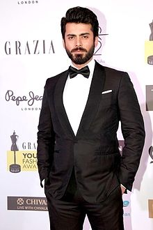

Contents[hide]
Fawad Khan
From Wikipedia, the free encyclopedia
For the cricketer, see Fawad Khan (cricketer).
Fawad Khan (born 29 November 1981) is a Pakistani actor, producer, screenwriter, model and singer. He has received several awards, including a Filmfare Award, Lux Style Awards and Hum Awards.
Khan began his acting career on the television sitcom, Jutt and Bond. He formed an alternative rock band, Entity Paradigm, with the show's co-stars and began his music career as its lead singer. The band appeared on the finale of Pepsi Battle of the Bands in 2002 and Khan became known for its 2003 debut album, Irtiqa. After about 250 performances, he left the band to pursue a film career. Khan made his film debut with a supporting role in Shoaib Mansoor's sociodrama, Khuda Kay Liye (2007), one of Pakistan's highest-grossing films.
He had his first success in the television period drama, Dastaan (2010), for which he received the Best Actor Award at the Pakistan Media Awards. Khan played a lead role in the Pakistani television serial Humsafar (2011), and appeared in Sultana Siddiqui's family drama Zindagi Gulzar Hai (2012). For both performances, he received the Lux Style Award for Best Actor - Satellite. Khan made his Bollywood film debut with the lead role in the romantic comedy, Khoobsurat (2014), for which he received the Filmfare Award for Best Male Debut. He was praised for his portrayal of a closeted homosexual in the critically and commercially successful family drama, Kapoor & Sons (2016).
In addition to acting, Khan has raised money for charitable organizations throughout Pakistan. He appeared as a judge in 2017, and has endorsed several brands and products. Khan has been listed among the "Sexiest Asian Males" by the British magazine Eastern Eye. He founded a clothing brand named Silk by Fawad with his wife, and has modelled for prominent designers.
Fawad Khan
Khan at the 2016 Grazia Young Fashion Awards
Born: Fawad Afzal Khan 29 November 1981 (age 37) Sindh,Karachi,Pakistan
Nationality:Pakistani
Alma mater:National University of Computer and Emerging Sciences
Occupation:Actor, Producer, Screenwriter, Model, Singer
Years active:2001–present
Spouse(s): Sadaf Khan (m. 2005)
Children:2
Genres:Rock.alternative rock
Instrument:Vocals.guitar.bass.drums
Labels:Lips Music (2002–2007),Independent (2009–2015)
Associated acts:Entity Paradigm, Coke Studio, Pepsi Battle of the Bands
Early Life
Khan was born in Karachi on 29 November 1981 into a Pathan family, and speaks Punjabi as his first language. His father was born in Patiala, British India (now Punjab, India), and moved to Pakistan at a young age after the 1947 partition. His mother's family originated in Lucknow, British India (now Uttar Pradesh). When Khan was young, his father was in pharmaceutical sales, which required the family to live in Athens, Dubai, Riyadh and Manchester during the Gulf War. His family returned to Lahore when he was 13.Since childhood, Khan has been a fan of Amitabh Bachchan and Rishi Kapoor. He has two sisters; his older sister, Aliya, is an architect and his younger sister, Sana, is a physician
The actor studied at an American school, where he said he faced racial issues and was bullied because of his shy, calm, non-combative nature. Khan passed his A-levels at the Lahore Grammar School (LGS), and received a bachelor's degree in software engineering from the National University of Computer and Emerging Sciences (NUCES) in Lahore. Because he could not find a job as a programmer, he soon began acting. In a Forbes India interview, Khan said that he had also failed to find a job in marketing. By then he could play guitar, bass and drums, and became Entity Paradigm's lead singer. Khan's first amateur performance was in the title role of a play, Spartacus.